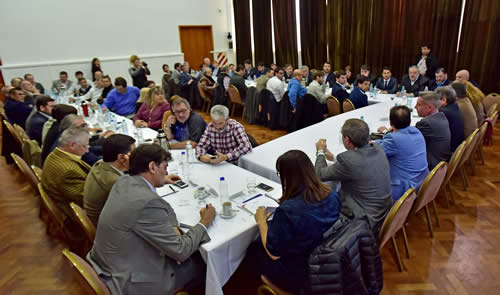
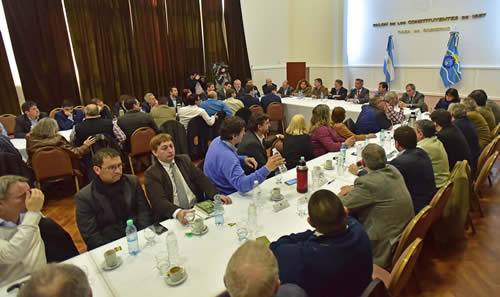

Real Chubut - Agencia de Noticias


Arcioni presidió reunión de gabinete hoy en Casa de Gobierno

Se planificaron acciones y coordinaron acciones para el mes en curso y se evaluó la situación ante el paro convocado por Atech
El Gobierno anunció que si se concreta el paro de Atech la semana próxima "se rompe la paritaria" y que se "descontará" los días a los docentes que no se presenten a trabajar.
El vicegobernador a cargo del Ejecutivo, Mariano Arcioni, este jueves presidió una reunión de gabinete de la que participaron ministros, secretarios y subsecretarios de los diferentes organismos provinciales y presidentes de entes descentralizados.
Durante el encuentro efectuado en el Salón de los Constituyentes, el Gobierno anunció que si Atech concreta el paro dispuesto para la semana próxima "se rompe la paritaria" y advirtió que se le "descontarán los días no trabajados a los docentes que adhieran", además que se "evaluará si corresponde alguna sanción al gremio".
El vocero de la reunión fue el ministro Coordinador de Gabinete, Víctor Cisterna, y al brindar detalles del encuentro indicó que "como siempre a comienzo de cada mes, hacemos una reunión de gabinete ampliada donde están participando los ministros, secretarios, presidentes de entes y subsecretarios, donde remarcamos el funcionamiento para cada mes, las líneas directrices más importantes de acción de gobierno de este periodo"
"Este caso la presidió el vicegobernador, Mariano Arcioni, que se ha hecho cargo de la gobernación de la provincia. Fue una reunión de trabajo como todas las que hacemos habitualmente", afirmó.
Cisterna detalló que "hicimos un repaso sobre la situación general de la provincia, el estado de las cuentas públicas, la situación complicada que tenemos y analizamos área por área cuales son las implicancias de esta situación".
"GENERAR CONFLICTO"
Al ser consultado sobre Atech y las paritarias expresó que "sabemos que algunos gremios están muy politizados, como por ejemplo el gremio docente, que responde específicamente a Martin Buzzi, y está siendo funcional a este sector político, y que en medio de una paritaria haya establecido dos días de huelga, y prevé hacer dos días más de paro, demuestra que no hay ningún espíritu de diálogo, sino que vienen a romper y a generar un conflicto con el Gobierno de la Provincia"
El ministro indicó que "hoy no se pudo hacer la reunión porque hay una amenaza de paro, lo que se ha pedido es que se vea si está resuelto o no el paro. Si se resuelve el paro se rompe la paritaria", aseveró.
Aseguró en este marco que "el ex gobernador Martin Buzzi y Rubén Zarate (ex ministro de Educación), que son los que manejaban la Educación en la anterior gestión, en la cual compartían con el gobierno y el Sindicato de la Atech, son los que están manejando esta situación".
Por eso "están generando el conflicto, sino no se explica esto" y agregó que "tenemos una paritaria abierta, se cobró el último tramo del aumento que estaba previsto, iniciamos negociaciones y ya tenemos dos días de paro que lo hicieron efectivamente, y además están programando dos días más de paro".
Cisterna aseguró que "no hay espíritu de diálogo, el espíritu es romper y hacer huelga, eso es lo que están buscando".
En este marco recordó que al sindicato docente "se le pidió 15 0 20 días para analizar la propuesta que habían traído, que era de llevar el sueldo a 10 mil pesos" y detalló que "nosotros dijimos que íbamos a dar una respuesta en ese plazo, pero la respuesta de ellos es un paro de 48 horas".
¿SANCIÓN AL GREMIO?
En este marco el ministro señaló que "en principio una vez que se concrete la decisión del paro, vamos a hacer la presentación para suspender las paritarias porque no tiene sentido seguir con ellas, y en segundo lugar analizaremos si corresponde alguna sanción al gremio por haber tomado esta decisión en el medio de una paritaria".
Además señaló que ante esta situación "por supuesto que a fin de mes se les descontarán los salarios a los trabajadores que no concurran a sus funciones".
"El mes pasado hubo dos días de paro, y que por cuestiones administrativas del Ministerio de Educación no se pudo descontar en este mes, pero se van a descontar los dos días, y si este mes faltaran dos días más se le van a descontar 4 días de salarios a los docentes que se adhieran a la huelga", sentenció.

SITUACIÓN DE CRISIS
Al ser consultado sobre la apertura de paritarias con los demás gremios, el ministro señaló que "ya ha habido reuniones con Luz y Fuerza en el día de ayer, y está previsto que la próxima semana quizás arranquemos con ATE, porque ya estaba acordado que en este mes íbamos a comenzar a dialogar sobre el resto del año y así lo vamos a hacer".
"Por supuesto manifestándole cual es la situación que está atravesando la provincia y las dificultades que tenemos, y pidiendo solidaridad para poder cumplir con nuestros trabajadores todos los meses en los salarios".
En este sentido indicó que "en una situación de crisis como la que se está viviendo lo que hay que priorizar es, por un lado, la preservación de los puestos de trabajo, y en segundo lugar, el cobro puntual de los salarios y por supuesto también la paz social. Y esto creo que es a lo que apelamos de todos los trabajadores del Estado, tanto docentes como el sector de salud y los demás".
Por último, Cisterna expresó que "apelamos a la solidaridad que tenemos que tener en un momento de crisis como la que estamos viviendo, hemos hecho un gran esfuerzo, nos ha costado muchísimo pagar este mes el aumento de sueldo que estaba previsto y ya nos están pidiendo nuevos aumentos".
Y agregó que "creemos que tenemos que tener una mirada un poco más tranquila sobre la situación y la realidad de la provincia y actuar preservando fundamentalmente la tranquilidad social".
PUBLICIDAD